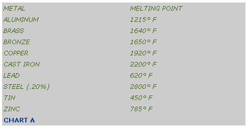
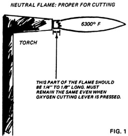
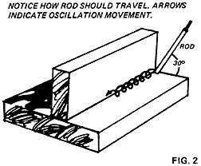
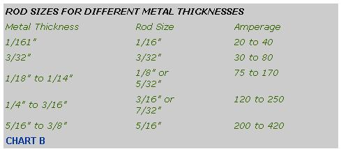

OF ALL THE SKILLS USED ON A MODERN HOMESTEAD, WELDING IS ALWAYS ONE OF THE MOST IN DEMAND. IT'S ALSO FAR TOO MUCH OF AN "ART" TO TEACH TO ANYONE IN A FEW PAGES OF ONE ISSUE OF THIS OR ANY OTHER MAGAZINE. THE FOLLOWING TWO ARTICLES, THEN, SHOULD BE CONSIDERED ONLY AS INTRODUCTIONS TO WELDING . . . A VALUABLE SKILL WHICH-ONCE MASTERED-CAN GO A LONG WAY TOWARD PAYING FOR THAT "LITTLE DREAM PLACE OUT IN THE COUNTRY" AND PUTTING BREAD-EVEN TODAY'S EXPENSIVE BREAD!-ON THE TABLE.
My career as a metalworker began a few years ago, when I was looking for a job out in Arizona. A friend of mine-a welder and the foreman of a shop in Tucson-offered to teach me his trade so I could apply for work with the same outfit. I accepted his offer . . . and that skill turned out to be one of the best I could have learned.
One obvious benefit is that I now make my living as a welder and have supported my family that way for several years. But that's not all! Life on our homestead has become a heck of a lot easier since I've mastered this craft. I've added all kinds of low-cost improvements, from scrap-steel ash shovels, pokers and other tools for our wood stove through a whole range of other repair and construction projects.
Take hammers, for example. Every homestead needs a few decent ones, both nail and ball-peen . . . but if I bought them from the hardware store I'd end up spending at least five bucks apiece. As a welder, though, I can scrounge an old auto axle and cut it to the desired size for the tool's head. Axle steel is about the hardest to be found anywhere, and just right for that purpose. Of course I may have to temper the metal some, but I simply put a little blacksmithing knowledge to work and end up with a fine implement (free, if I choose to make my own handle). Many other tools can also be made by hand . . . the homesteader's own needs will determine which ones he tackles.
In addition, we've saved hundreds of dollars by repairing and/or rebuilding rusted-out auto and truck bodies. Several years ago, for instance, I bought a 1960 Ford pickup for $100. Its bed was so badly eaten away that I had reservations about hauling around my spare tire back there for fear I'd lose it out the holes. My solution was to tear off the original Detroit sheet metal bed and build a very efficient wooden stake body using homemade hardware formed from scrap steel. All I really needed to buy were a few half-inch bolts.
As a bonus from my truck repair project, the old rusted bed has been recycled into various other jobs which required small pieces of auto-body sheet steel. Such scrap is very useful for thousands of homestead needs . . . and it's free. Virtually every old farm up here in Maine has, on the average, at least half a dozen junked cars, trucks and tractors.
Building is another field where skill as a welder can pay off. Large domes-both for housing and for work space-have been constructed entirely from recycled free junk metal. In many instances, steel structures can be erected, by selective salvaging and scavenging, at a fraction of the cost of their wood counterparts.
Now. If I've sold you on the idea of learning to weld, you may be wondering how much you'd have to invest in equipment. Maybe less than you think: You can buy a fine electric arc welding machine, brand new, for $100. (To use it, of course, you'll have to have either a 220-volt outlet or else a good 5-kilowatt generator.)
The other form of welding-the, oxyacetylene process-is fueled by the combined burning of two gases, acetylene (two parts hydrogen and two parts carbon) and oxygen. Each is housed in its own separate tank (the taller, more slender green container holds oxygen). The fuels are brought together by two hoses running from the tanks to a torch tip, and are mixed in certain proportions in order to produce a super-hot flame. Temperatures between 5,000° and 6,500° F are reached: high enough to melt quarter-inch-thick steel in about seven seconds.
Electric are welding is really a good bit cheaper in the long run than oxyacetylene, since the price of electricity is still a "bargain" compared to the cost of fuels for the other process. You really need both setups in conjunction, however, because you'll find oxyacetylene very handy for various purposes . . . including any brazing you have to do. (Brazing is the method of joining metals by means of a filler rod made of copper and zinc. The parts to be unified are not melted, as they are in welding . . . only the filler is liquefied to form the bond. The process is similar to soldering, and is generally used on items such as broken mufflers and tailpipes that are too thin to be arc welded effectively. Auto body men use brazing to repair damaged or rusted sheet metal.)
Oxyacetylene is also a practical way to cut steel . . . an alternative to investing in a power hacksaw. The item to be cut is first made red-hot, and the oxygen valve is then pressed to produce a blast of gas which literally blows away the molten metal.
If you own an old blacksmith's forge, of course, it's quite a bit cheaper to fire it up with coal and cut the red-hot steel with a good cold chisel than it is to use oxyacetylene. In many instances, however, the old method takes considerable time to set up (because of such matters as getting the coals red-hot and looking for pieces of steel small enough to fit into the forge). A combination of the traditional blacksmith's art and the modern oxyacetylene method is really best for the homesteader who wants to become self-sufficient in the metal crafts.
If you decide to acquire gas welding equipment, check out machinery auctions for the best buys on used items. (As far as I can determine, a now welding and cutting apparatus-with accessories but minus gas tanks-now runs $150 and up-MOTHER.)
OK, let's say you just went out and bought an oxyacetylene outfit and are about to use it for the first time. Before you do anything else, make sure you have on heavy leather welders' gloves and that your shaded goggles are on your forehead. Too many good craftsmen have destroyed their eyesight by not wearing such glasses for oxyacetylene work.
You should also see that the two gas tanks are very securely fastened to their handtruck, or attached to the wall with a good strong chain. The oxygen is under high pressure and acetylene is extremely combustible, so be careful not to let the containers fall. And remember, absolutely no smoking around oxyacetylene equipment.
Before using the outfit, it's always a good idea to open the valve on each tank at least a quarter turn in order to blow out any dust or dirt that may have collected on the fittings. This step is called "cracking the tanks".
(After a while, incidentally, you'll learn what pure acetylene smells like. This will help you locate any leaks in your equipment. The soapsuds method is about the best way to check for escaping gas when you hook up fresh tanks. Make sure the torch valves are closed and the tank valves open during this test.)
Next, hook up the regulators. The oxygen connections have right-hand threads, while those for the acetylene are left-handed. The green hose is for oxygen, the red for acetylene. (You can remember the difference by associating "red" with "fire".) Secure all fittings with an open-end wrench . . . not the adjustable or crescent type, which has a habit of chewing the daylights out of the brass connections.
Welding is carried out at various pressures according to the work to be done. For steel 1/8" to 3/8" thick, I usually run the acetylene to the hose at about 7 to 10 psi (pounds per square inch). The oxygen is held at about 25 to 30 psi, since an oxygen-acetylene ratio of between three to one and five to one is the general rule.
Here's how to set pressure: Open the valves on the regulators by screwing them all the way out (make sure those on the torch are closed). Then open the valves on the gas containers until the regulators' tank pressure gauges 'register "medium". The point when this is reached will vary according to the surrounding temperature: The pressure in the receptacles will be higher at 80° than at 50°. To get hose pressure, screw in the regulator valve until the desired psi value is reached.
The next step is to light the torch. Open the oxygen inlet valve (the one closest to the green hose) all the way, but make sure the oxygen preheat valve-the one way up on the torch near the cutting lever-is open only about a quarter turn. Have your goggles down and your gloves on. Pick up the striker and open the acetylene stopcock about half a turn just before igniting the gases at the torch tip. Be sure the business end of the unit is pointed away from you, from anyone else and from all flammable objects.
You must then balance the acetylene with the oxygen to produce the "neutral" flame which is ideal for cutting (see Fig.1). Adjust the acetylene control on the torch-try closing it an eighth of a turn or so-and you'll notice how the smoky orange flare decreases, giving way to the cleaner neutral flame. Adjustments to the cutting and preheat valves will give further
refinement. The whole idea is to keep the inner cone closest to the torch tip burning in such a way that-when the cutting lever is pressed-this central portion doesn't change length. It's a good idea to have an experienced welder show you exactly what the correct flame should look like . . . words can go only so far.
Once you've got the flame adjusted, place the torch tip so that the inner cone is about one-eighth of an inch from the piece of steel to be cut. When the area turns red-hot, press down on the oxygen cutting lever and blow away the molten metal in the strong stream of gas. The torch is best kept at an angle of about 600 to the work, with the tip pointing in the direction of travel. Moving it too fast will result in no cut. (I hope these hints help you, but a good, clean job comes only with experience.)
As an aid to neat work you can draw a guideline on the metal with a soapstone marker, available at any welding supply store. When making longer cuts-say anything over 10 inches-I usually clamp a rugged piece of angle iron next to the intended line and run the torch along its back edge for a nice, accurate result.
After the piece has been cut, it's good practice to knock the slag from the edge with a, cold chisel and ball-peen hammer. Finish the work with a grinder for a smooth, machined appearance.
Fine! Your special piece of steel is down to size and you're ready to fabricate that certain part you need to repair the cultivator. It's time to fire up the arc-welding machine.
Once again, the rule is "safety first" . . . and that means a good Fiber-Metal helmet (a must because the ultraviolet rays produced by the arc-welding process are dangerous to your eyes and to any exposed skin). The headpiece should be fitted with at least a No. 12 shade lens, and it's also a good idea to add two clear plastic lenses . . . one in front of the shaded plate, the other behind it. The purpose of these extra barriers is to protect the expensive colored shield from metallic splatter. I prefer plastic to glass because it's less easily damaged by smoke and flying metal drops.
It's, also advisable to wear heavy leather gloves and preferably a fireproof shirt or jacket. Try to avoid dressing in ragged, fringed jeans! I've had several such garments start smoldering in the course of welding jobs. If you can afford them, leather pants are best for this kind of work.
Ready? Set your machine to the correct amperage for the meal's thickness and the size of welding rod you intend to use (see Chart B). The box the rod comes in will indicate the best beat range for each type. (Personally, I prefer Eutectic brand . . . the best available, according to my own experience and the advice of other welders.)
Connect the ground cable to the welding job, fairly near the intended join but far enough away that it won't interfere with the work. Place the rod in the grooves of the electrode holder, turn on the machine and you're ready to strike the arc.
A caution: I can't overemphasize the importance of making yaw helmet falls down over your face before the arc is struck. If the straps are properly adjusted, a good healthy nod will bring down the head covering at the right moment. It's not always convenient to rely on your other hand for this purpose, because you'll generally be using it to hold the job in place.
Now. Your helmet is down, right? Go ahead and produce an arc by scratching the rod over about an inch and a half of the area to be welded, and then lifting the electrode about a quarter inch from the work. Try to keep the instrument at about 20 to 30 degrees from vertical, with the hot tip pointing in the direction of travel . . . assuming, that is, you're doing a horizontal, flat weld. For vertical or overhead flat work, keep the tip aimed opposite to the direction of travel (that is, toward the point where you began).
Once the arc has been started, your goal is to mix the two pieces of steel together with the aid of the melting rod in order to produce a solid weld. To achieve this, it's best to move the tip in a circular, oscillating pattern. Keep the "circles" about a quarter inch in diameter, with the horizontal axis of each oscillation exactly on the joint. Every movement should overlap the last just a little. (See Fig. 2 for a diagram of the technique.)
This oscillation method is the one that works best for me, but practice is needed to learn the most comfortable and effective wrist and hand action. You'd do well to have an experienced welder show you the proper motion.
After the pieces have been joined, it's sometimes necessary to remove all the remaining slag that covers the finished weld bead. This is a must whenever a second line of welding is to be laid down next to or on top of the first . . . and it's a good idea in any case, as a check for solidity, since air pockets can sometimes be discovered in the process. The cleaning can be done with either a regular cold chisel or a chipping hammer with a wire brush.
There, in brief, you have the basics of welding, and any homesteader will find them worth his while to learn. Well worth the cost of equipment, too. The several hundred dollars you put into a complete outfit will be more than repaid in a few years, especially if you own trucks or farm machinery. If you break part of your harrow out in the field, hiring a welder from a town 30 miles away can be a costly affair (assuming you can find such a person at all). Up here in the backwoods, metalworkers earn at least $6.00 per hour. That's bad news if you have to pay for the service. If you can do the work yourself, though, you can save all kinds of money on your own place . . . and you'll also have the basis for a homestead business that's hard to beat.
The following are some helpful books on welding and metal shop craft:
Modern Welding by Althouse, Turnquist and Bowditch, Good-heart-Willcox Co., 123 W. Taft Drive, South Holland, Ill., 60,473,1970, $9.96 .
Welding Craft Practice by N. Parkin and C.R. Flood. Vol. 1: Oxy-Acetylene Gas Welding and Related Studies. Vol. 2: Electric Arc Welding and Related Studies. Pergamon Press, Inc., Maxwell House, Fairview Park, Elmsford, N.Y. 10523,1969, $2.40 per volume.
The Making of Tools by Alexander G. Weygers, Van Nostrand Reinhold Co., 450 W. 33rd St., New York, N. Y. 10001 (or through MOTHER'S Bookshelf), 1973, $4.95.
The Art of Blacksmithing by Alex W. Bealer, Funk & Wagnalls Publishing Co., 53 W. 77th St., Now York, N. Y. 10024 (or through MOTHER'S Bookshelf), 1969, $10.00.
|
 |
 |
 |
|
 |
|
|